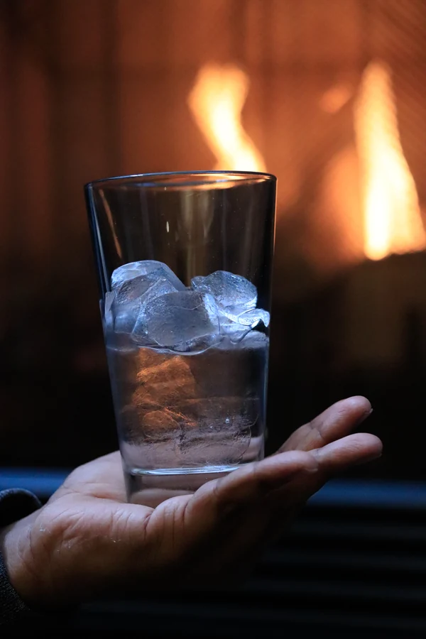
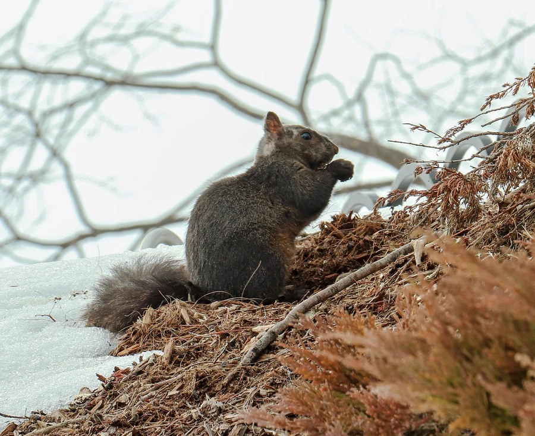
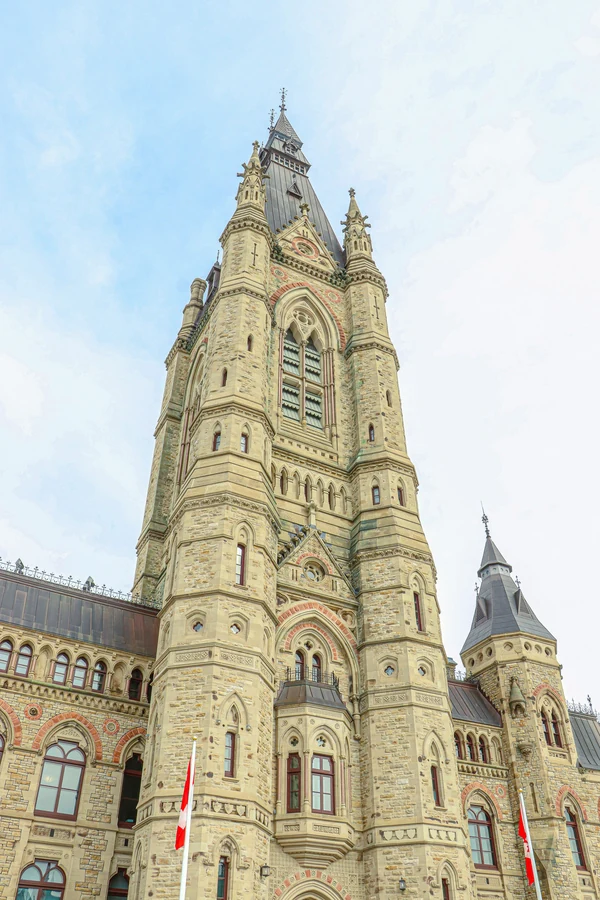
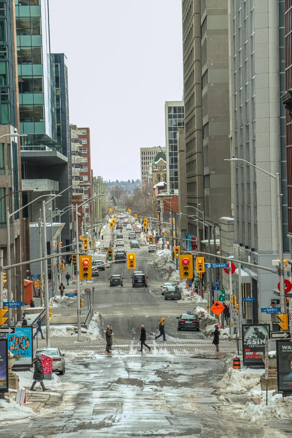
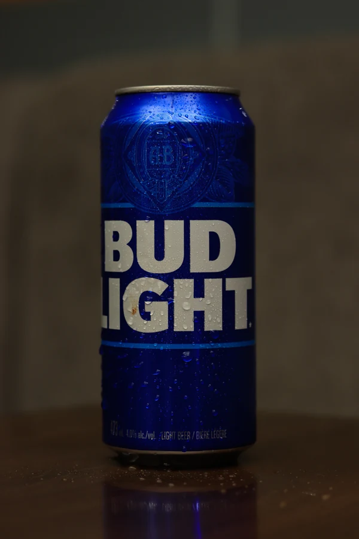
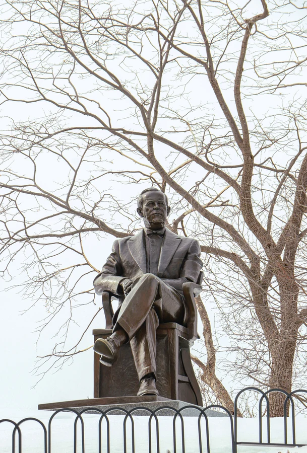
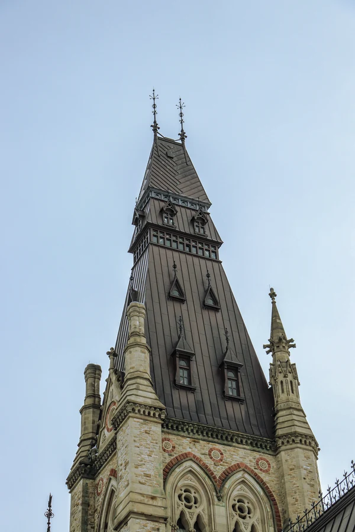
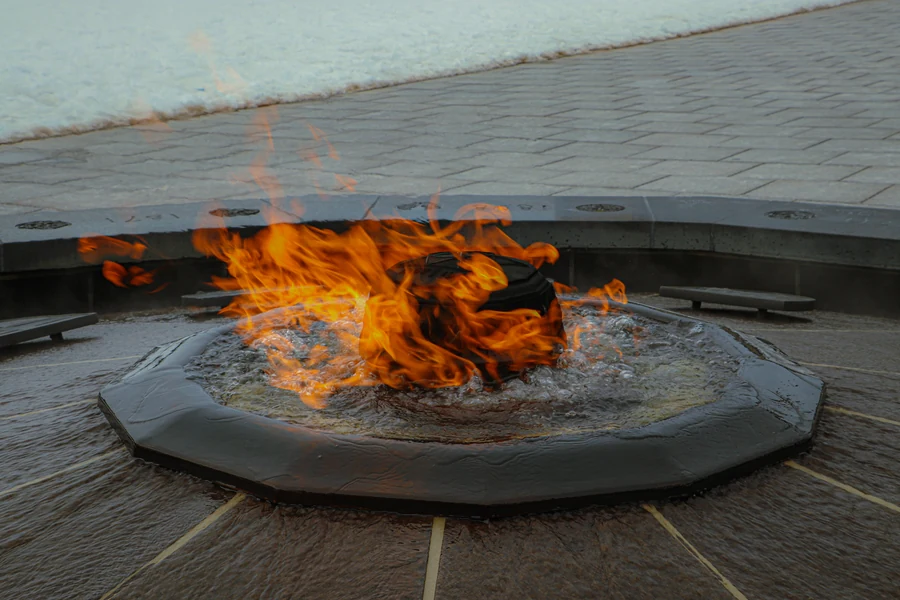
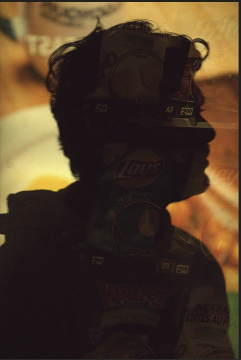

PHOTOGRAPHY / 11
A closer look at the everyday
A study of light, atmosphere, and composition through objects, streets, and natural details.
Objects · Architecture · Everyday momentsTHE PROJECT
Photography collection
A personal photography collection spanning product-style compositions, architectural subjects, street scenes, and natural details. The photographs explore how light and framing can change the mood of familiar subjects.
Visit Adobe Portfolio (opens in a new tab)MY DESIGN APPROACH
Some images isolate a subject against a quieter background; others use lines and perspective to give a sense of place. Warm light, reflections, and close observation connect the different subjects.
DESIGN OBJECTIVE
Explore mood, framing and light across a personal collection.
Objective interpreted from the artwork; original customer brief not supplied.
COLOUR & CONTRAST
Warm light and cool shadows produce contrast in several photographs. Other images use a narrower colour range so texture and silhouette become the focal point.








